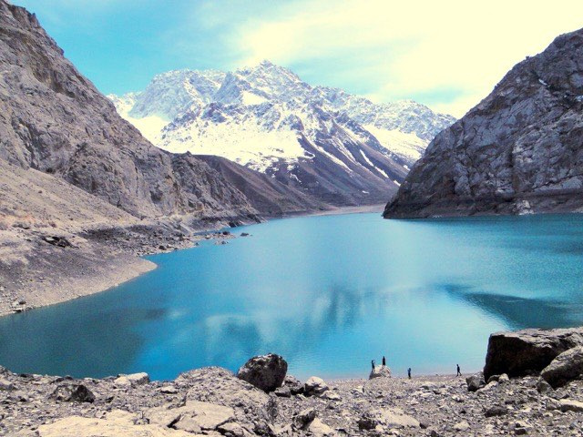
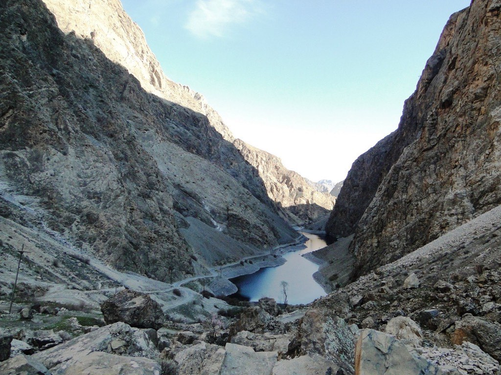

Seven Lakes Tajikistan (Haft Kul)
Откройте для себя одну из самых красивых горных долин Центральной Азии. Невероятный градиент красок в сердце Fann Mountains.
Unique Landscapes
7 озер на высотах от 1640 до 2360 метров с разным цветом воды.
Comfortable 4x4
Современные внедорожники и минивэны для поездок по горным серпантинам.
Private Tours
Индивидуальные программы, личный гид и помощь на границе.
The 7 Lakes of Haft Kul
Узнайте об уникальных характеристиках каждого из семи озер долины Шинг.

Нежигон (Nezhigon)
Невероятно яркий бирюзовый цвет и эффектный каскад у плотины.
Learn more →
Соя (Soya)
Озеро в тени высоких скал, цвет которого завораживает насыщенным изумрудом.
Learn more →
Хушёр (Gushor)
Бурные воды и потрясающий живописный вид на горы.
Learn more →
Нофин (Nofin)
Самое протяженное озеро с традиционными таджикскими деревнями на берегу.
Learn more →
Хурдак (Khurdak)
Компактное, кристально чистое озеро на высоте 1870 метров над уровнем моря.
Learn more →
Маргузор (Marguzor)
Огромное и величественное "Озеро Цветов", окруженное крутыми склонами.
Learn more →
Хазорчашма (Hazorchashma)
Седьмое небо Хафт Кул (2360 м). Дикая природа и тишина.
Learn more →Featured Tours
Откройте Fann Mountains вместе с нашими профессиональными гидами.

Samarkand to Seven Lakes Tour
Самый удобный способ увидеть Таджикистан во время визита в Узбекистан. Включает трансфер из вашего отеля в Самарканде, помощь на пограничном переходе и возвращение в тот же день.

Fann Mountains Jeep Tour
Полноценное приключение в глубину Таджикистана на комфортных внедорожниках. Посещение озер Искандеркуль, Seven Lakes и живописных перевалов, доступных только для 4x4.
Tajikistan Travel Guide
Полезная информация для планирования поездки.
Best Time to Visit
Озера открыты с мая по начало октября. Лето идеальное время насладиться яркой бирюзовой водой и теплым климатом.
Read more →Border Crossing
Переход "Джартепа/Саразм" (Самарканд - Пенджикент) открыт для туристов. Процесс на машине занимает 20-40 минут.
Read more →What to Bring
На Хазорчашме может быть прохладно даже жарким летом. Берите ветровку и удобную обувь (кроссовки/трекинг).
Read more →Route Overview
Samarkand / Panjakent
Трансфер, переход границы, старт маршрута в долину реки Шинг (0-20 км).
Nezhigon to Marguzor (Lakes 1-6)
Живописный серпантин от Нижнего каскада до самого большого 6-го озера (20-35 км).
Hazorchashma (Lake 7)
Подьем на крутой скалистый уступ к последнему озеру (35-37 км).
Why Choose Us
Премиум качество по локальным ценам.
Local Expertise
Мы сами из Таджикистана. Наши водители знают каждый поворот и историю каждого озера.
Transparent Pricing
Никаких скрытых платежей. Фиксированная цена без переплат агентам и посредникам.
Flexible Itineraries
Остановимся там где захотите. Больше времени на фото и адаптация под ваш темп (дети / взрослые).
Book Your Tour
Готовы к приключению в Fann Mountains? Отправьте нам запрос, и мы оформим тур в течение 10 минут.
- Трансфер Самарканд ↔ Seven Lakes
- Встреча у вашего отеля
- Внедорожник (4x4) или минивэн
- Помощь на границе
- Вода в салоне и безлимитные фото-стопы
240 USD / car
(up to 4 pax = from 60$ / person)